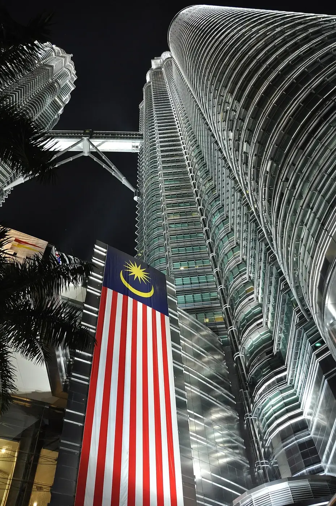
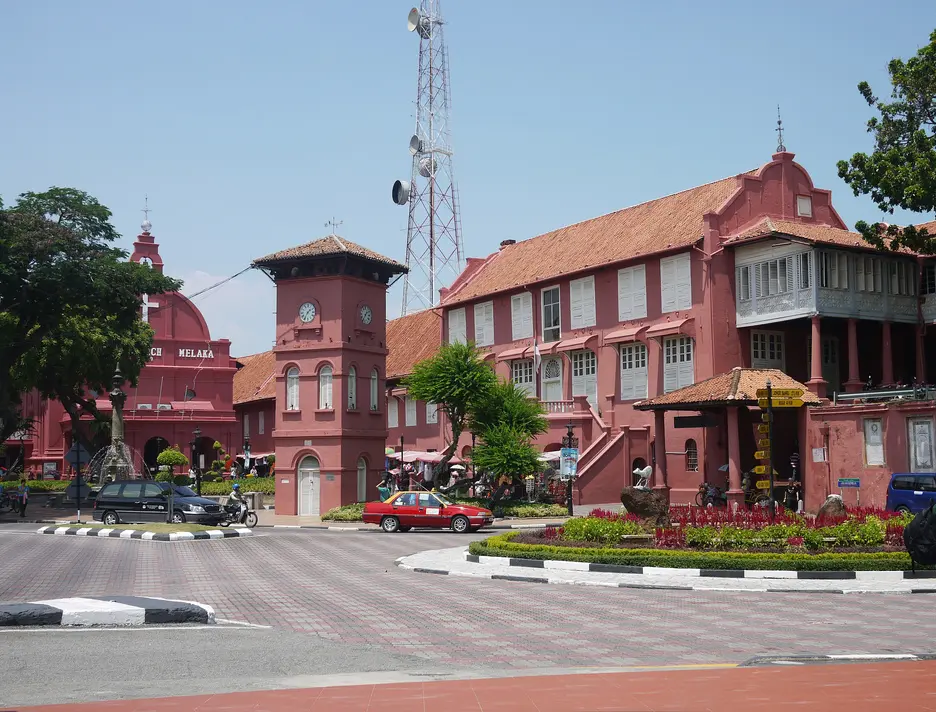
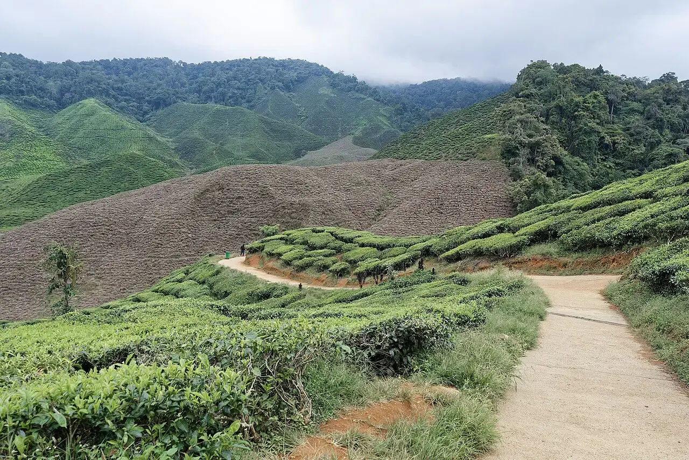
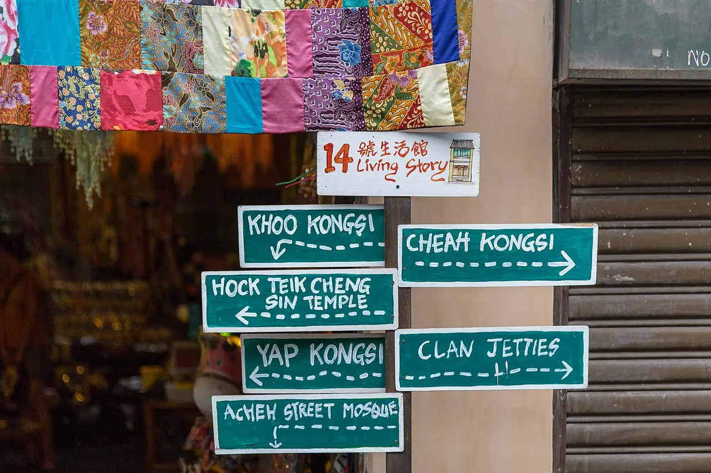
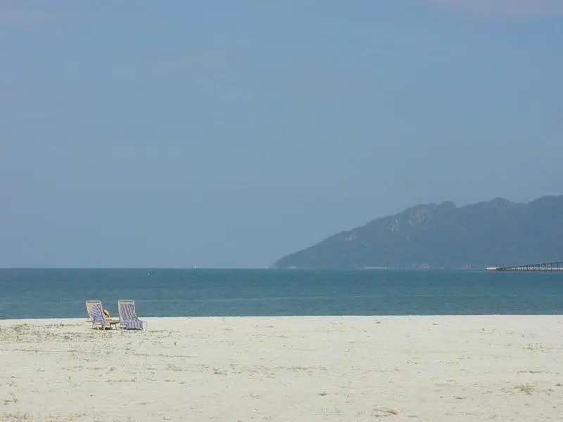
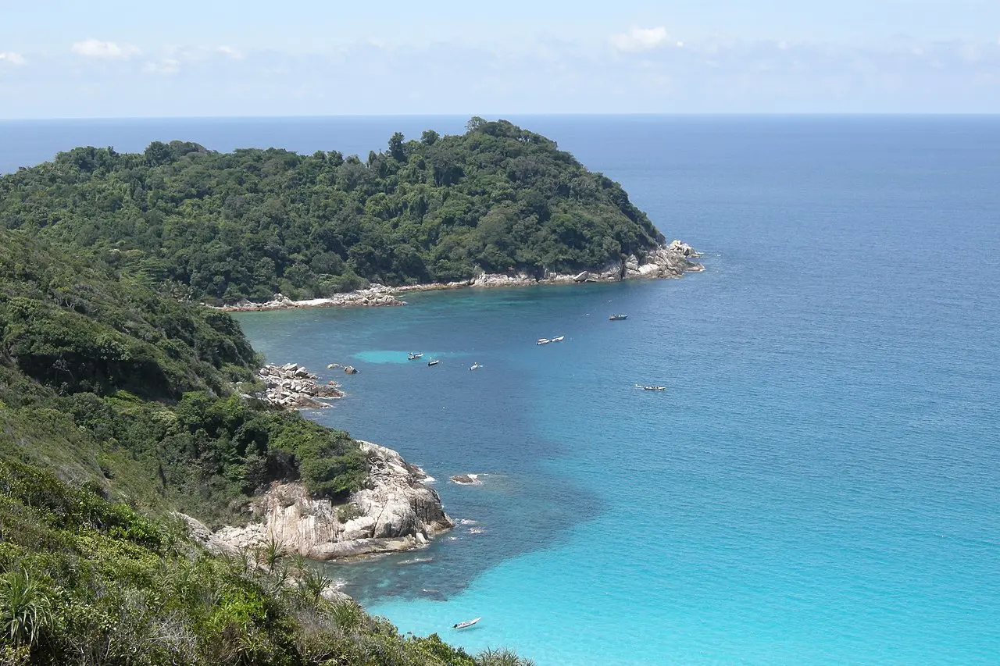
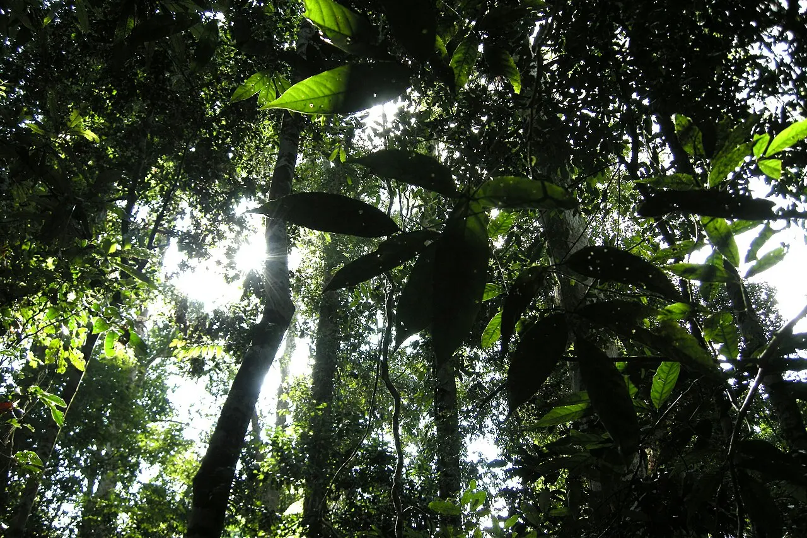
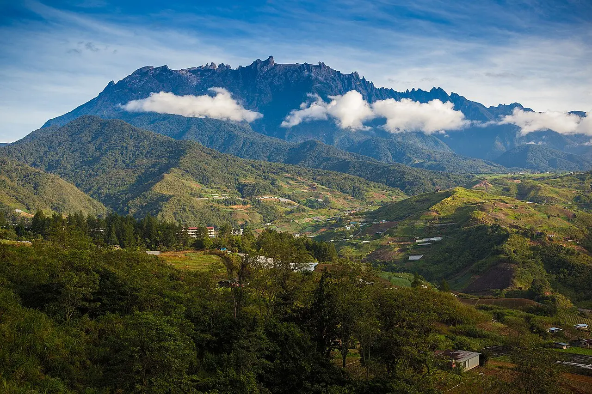
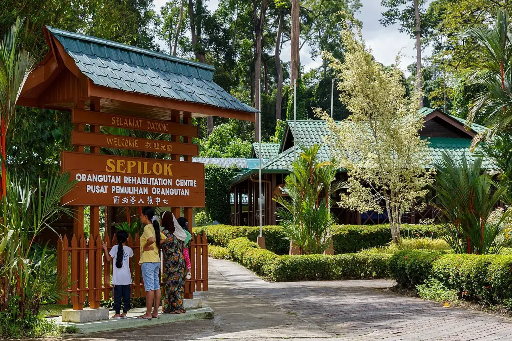

Trace the trip left to right,
watch the nights add up.
One sensible order for a first Malaysia trip: fly into KL, sweep the west coast northward, cross to the east-coast wild leg, then jump to Borneo — cities → hills → islands → jungle → wildlife. The only doubling-back is the short KL↔Malacca hop.
01 The recommended line · ~20 nights
Every base except Kuching, sized by nights, with the hop between each station. Borneo here is Sabah only (KK + Sandakan); add Kuching/Sarawak via the long arc below. Scroll the line →

3 ntsKuala Lumpur
West · hub
2 ntsMalacca
West · heritage
2 ntsCameron Highlands
West · hills
3 ntsPenang
West · food city
2 ntsLangkawi
West · beach
3 ntsPerhentian Is.
East · reef
2 ntsTaman Negara
East · jungle
2 ntsKota Kinabalu
Borneo · Sabah
3 ntsSandakan / Sepilok
Borneo · wildlife02 Three lengths, same line
Each track is the trip drawn to scale — segment width is nights at that base, so the longer the track, the more nights. The short cut keeps only what Malaysia does best for a first-timer (west-coast food + Borneo wildlife); the long arc runs every base at its own pace and adds Sarawak.
03 The Nov-Feb branch
One constraint reroutes everything. If your dates land in the Northeast monsoon, the east-coast leg flips out — the trip doesn't shrink, it rebalances west and into Borneo.
Perhentian resorts shutter early November to late February and the ferries stop entirely 15, with ~25 rain days in November and island-flight cancellations through Dec-Jan 16. Langkawi and Penang sit on the Andaman/leeward side and are at their driest and calmest now 17, and Sabah's Kinabatangan stays accessible year-round 18. Do not route the east-coast leg in this window.
Land in the late-Feb shoulder and the islands may be reopening — keep the Perhentian leg refundable and decide ~7-14 days out on the forecast 17.
04 Hop reference · the spine at a glance
Detail lives on each base's transport page; this is the connective tissue — mode and rough time per hop.
| Hop | Mode | Rough time | Source |
|---|---|---|---|
| KL → Malacca | Bus | ~2h | 1 |
| Malacca → Cameron Highlands | Bus (change near KL) | ~5h | 2 |
| Cameron Highlands → Penang | Bus / minivan | ~4.5h | 320 |
| Penang → Langkawi | Fly (ferry suspended) | ~40min | 45 |
| Langkawi → Perhentians | Fly via KL + bus + ferry | ~½ day | 78 |
| Perhentians → Taman Negara | Ferry + shared van | ~8-9h | 9 |
| Taman Negara → KL | Van via Jerantut | ~4-5h | 10 |
| KL → Kota Kinabalu | Fly | ~2h35 | 11 |
| Kota Kinabalu → Sandakan | Fly (or ~5-6h road) | ~45-50min | 12 |
| Sandakan → Kuching (long arc) | Fly via KK (no direct) | ~3-4h total | 13 |
| Kuching → KL (home) | Fly | ~1h50 | 14 |
Note · 13 May 2026: KL-bound buses from Jerantut (the Taman Negara gateway) now leave from Terminal Bersepadu Gombak, not Pekeliling 10.
05 The rest of the expedition
This page is the route. The why, when, how-to-move and what-to-pack live in its sibling guides under the parent crossing.
Why visit Malaysia
Five reasons it's the most rewarding first step into Southeast Asia.
reconGetting there + visa
Fly into KLIA; Belgians get 90 days visa-free with the free MDAC.
surveyInternal transport
Fly the long hops, take the train/bus for the short scenic west-coast ones.
surveyWhen to visit
Late March-May is the one window where islands and Borneo are both open and dry.
surveyFirst-visit prep
Money, SIM, health, etiquette, safety and per-couple budget.
06 Sources
The hop times and the nights logic, sourced. Every claim above carries its number inline.
KL→Malacca is a ~2h express bus, very frequent.
KL→Cameron Highlands is a ~3.5-4h mountain bus.
Cameron→Penang is a direct bus of ~4.5h.
The direct Penang-Langkawi ferry is suspended for 2026.
Penang→Langkawi is a ~40-min direct flight.
Closest mainland ferry to Langkawi is Kuala Perlis (~1h15).
Langkawi→Kota Bharu: no direct flight; via KL or overland.
Kota Bharu→Perhentians via Kuala Besut + 30-40min ferry.
Direct shared van Perhentians↔Taman Negara, a ~8-9h day.
Taman Negara→KL via Jerantut; TBG from 13 May 2026.
KL→Kota Kinabalu is a ~2h35 direct flight, very frequent.
KK→Sandakan is a ~45-50min flight; AirAsia only direct.
No direct Sandakan↔Kuching; connects via KK.
Kuching→KL is a ~1h50 direct flight, ~18/day.
Perhentian resorts close Nov, reopen late Feb; ferries stop.
NE monsoon: ~25 rain days in Nov, flights cancelled Dec-Jan.
Perhentians' reliable window is ~April/May-September.
Kinabatangan: dry Mar-Oct best; accessible year-round.
Peak Kinabatangan wildlife is May-Aug (fruiting trees).
Cameron→Penang minivan/bus operators from ~US$12.